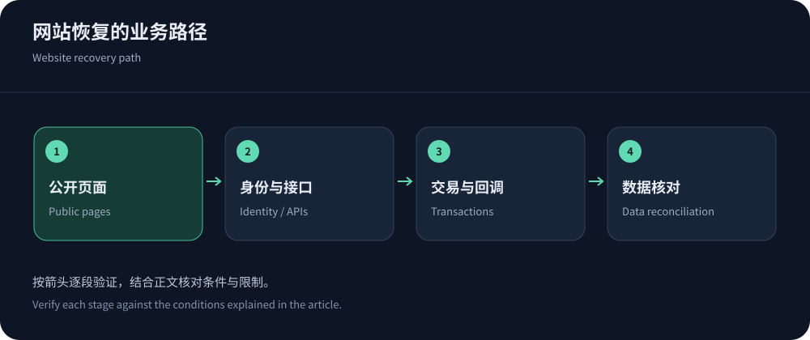
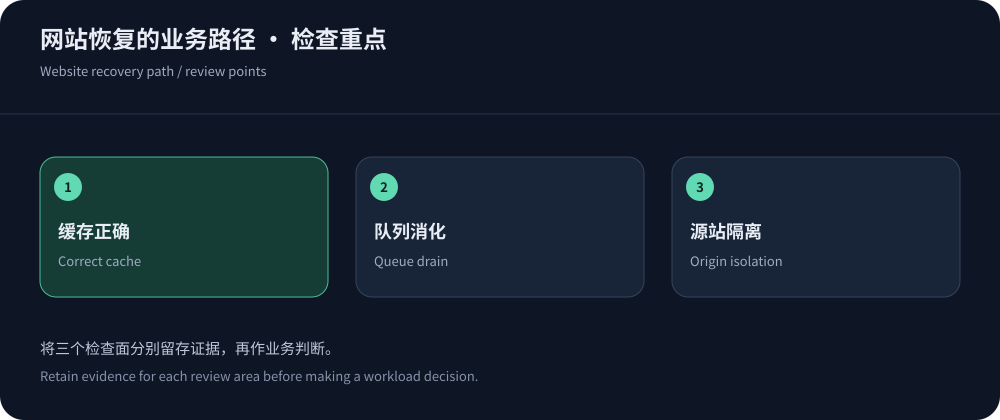

A working homepage is not full recovery
A CDN can serve a cached homepage while login or payments fail, or challenge a healthy backend. Define critical tasks across public content, identities, reads/writes and callbacks. HTTP 200 alone is insufficient.
Releases, TLS or databases may fail alongside an attack. Preserve evidence using CISA guidance. This workflow, based on material checked on 14 October 2026, requires application-specific validation.
Independent workflow checks prevent a cached homepage from concealing backend failure.
Prioritize a recovery checklist by impact
Secure diagnostic access first, then prioritize essential workflows with business owners. Orders, callbacks and identity may be urgent for commerce; readability and publishing may dominate content sites.
For each task record dependencies, owner and correct-result criteria. Check external queues and duplicate notifications. If reports or batch work are deferred, record resumption and catch-up requirements.


Distinguish edge and origin failures
Correlate user, edge and origin records. Missing origin arrivals suggest edge/path issues; slow arrivals require application/dependency analysis. Cache hits can still contain stale errors, so validate content.
Use Cloudflare cache guidance and RFC 9111. Purge affected paths deliberately rather than causing a full cold-cache surge during recovery.
Recovery actions and acceptance signals
Pair every recovery action with validation and a rollback condition. Change limited variables and preserve negative results as well as successes.
| Action | Evidence | Prevent a second failure |
|---|---|---|
| Adjust scoped security | Legitimate clients complete tasks while abnormal work remains controlled. | Scope exceptions by route/identity/expiry. |
| Restore public content | Pages/assets/versions agree and updates propagate. | Target invalidation and bound refill concurrency. |
| Restore dynamic work | Queues drain and transactions/callbacks reconcile. | Bound retries and make writes idempotent. |
| Switch ingress/origin | Audience checks, TLS/auth and overlap logs are valid. | Keep protection and handle consistency/established sessions. |
Preserve client compatibility during containment
Callbacks, monitors, SDKs and crawlers differ from browsers. Use trusted identity and signatures, accounting for shared egress and endpoint cost. User-Agent alone is not proof.
Rate-rule documentation helps correlate matches and legitimate failures before scoped changes. Follow CC response when application work dominates rather than assuming more bandwidth is the answer.
Close bypasses before declaring lasting recovery
Audit historical/alternate origin entrances and restrict trusted proxy/operations access across IPv4/IPv6, validating TLS and identity. Preserve checks and administration. Test allowed protected traffic and denied bypass together.
If adding a service such as CDN5, verify protocol and region without skipping configuration under pressure. New protection does not automatically close old entrances. Observe DNS/session overlap before retiring them.
Reconcile business data after network recovery
Reconcile successful, failed, retried and unresolved transactions. A timed-out write may already have executed; use idempotency and durable records rather than replaying every timeout. Scope and audit recovery jobs.
Remove stale prices/errors/notices carefully, resume background work gradually and avoid releasing every limit before queues drain. Validate real audiences, with business-owner confirmation alongside technical evidence.


Turn recovery into preparation
Archive changes, evidence and tickets, distinguishing causal improvements from coincidence. Reconcile temporary costs and revoke exceptions. Update inventories and runbooks with owned, verifiable actions.
Use the defense architecture guide to improve upstream, edge, origin and application controls. Better recovery means faster diagnosis, fewer ineffective changes and completed user tasks.